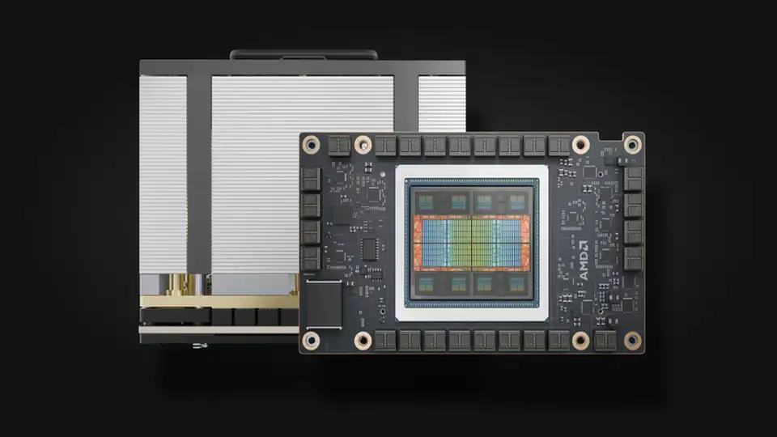
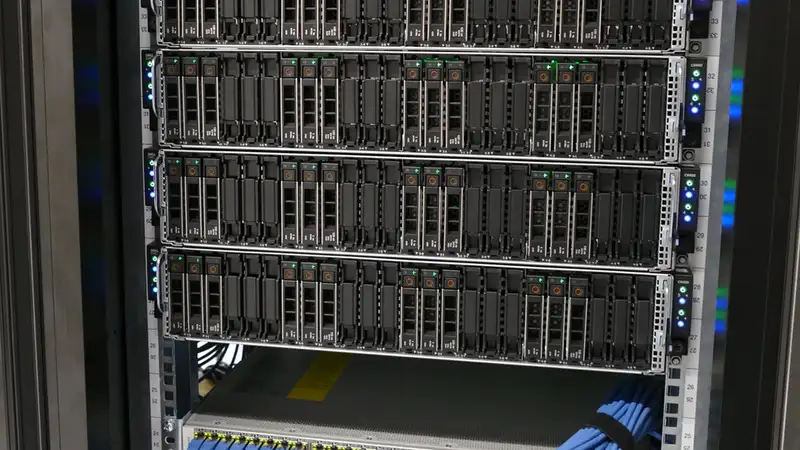

Scaleway puts Europe’s first commercial AMD AI supercomputer in Sweden — MI355X, revealed at ai-PULSE 2026
French cloud provider Scaleway announced on Tuesday that it will deploy an AMD Instinct MI355X-powered AI supercomputer in Sweden — its first supercomputer outside France and, the company says, the first commercial AMD AI supercomputer in Europe, open to startups and enterprises across the continent.
The announcement came on the occasion of ai-PULSE 2026, Scaleway’s annual AI conference in Paris. The machine will run on AMD Instinct MI355X GPUs with AMD’s open ROCm software stack, and Scaleway says it will give startups, AI companies and enterprises across Europe access to AMD GPU capacity at scale. It is also the first time Scaleway — a subsidiary of France’s iliad Group — has deployed a supercomputer of this kind outside its home market.
The build sheet
Supercomputers at this scale stand or fall on the full stack, and Scaleway named its partners: AMD provides the MI355X GPUs and the ROCm open software ecosystem; Bull integrates and deploys the cluster, from racks and cooling integration to data-center installation and ongoing hardware maintenance; Giga Computing provides the servers at the heart of the system; HPE Networking supplies high-performance Ethernet; VAST Data provides the high-performance data platform; and Motul supplies a liquid cooling fluid engineered for the thermal demands of high-density AI computing. Together, Scaleway says, the stack is designed to deliver demanding AI performance while improving overall system efficiency.

Why Sweden
Scaleway picked Sweden for its strong AI and technology ecosystem and its largely low-carbon electricity mix — and the move builds on the company’s growing presence in the country, including its partnership with telecom operator Tele2. Scaleway entered the Swedish market in May with a Tele2 deal to sell its cloud and AI services there, and Tele2’s B2B chief Stefan Trampus said the supercomputer “sends a clear signal” on Sweden’s attractiveness for AI infrastructure. For Scaleway, the location also reflects a bet on “sustainable scale”: as AI grows more compute-intensive, where that capacity sits matters.
AMD’s European beachhead
For AMD, the win is a highly visible commercial showcase for its Instinct line against Nvidia’s grip on AI compute. The MI355X is AMD’s answer to Nvidia’s Blackwell line, which powers most AI computing globally, and the system sets AMD’s open-source ROCm ecosystem against Nvidia’s proprietary CUDA. AMD’s Stephanie Dismore, SVP for EMEA, said the partnership is “expanding the choice of AI infrastructure available to customers across Europe, through AMD Instinct GPUs and our open ROCm software ecosystem.” The precedent exists: AMD chips already power European research supercomputers including LUMI in Finland, while US cloud firms including Oracle and Vultr rent AMD chips to European customers. Scaleway’s machine would be the first commercial AMD system on the continent.

ai-PULSE 2026 was a double announcement for Scaleway: alongside the Swedish AMD system, the company revealed a new GPU Zone in Copenhagen powered by NVIDIA’s B300 chips, responding to growing demand for European-controlled GPU capacity. The two moves together show Scaleway’s two-track strategy — building its own alternative stack on AMD while also expanding the Nvidia default.
Scaleway describes itself as Europe’s sovereign cloud and AI provider, a subsidiary of the iliad Group with more than 100 cloud and AI products, four multi-AZ regions and over 5,000 GPUs already available to researchers and companies. It was the first European public cloud to deploy a GPU supercomputer back in 2023 — the Swedish build is the next chapter of that play, now outside France and on non-Nvidia silicon.
Scaleway frames the deployment as giving European companies greater choice in how they build and scale AI — opening new paths on architectures beyond the Nvidia default. No timeline for when the Swedish system goes live was given.
Sources: Scaleway — “Scaleway Expands AI Infrastructure in Europe With New AMD Instinct GPU-Based Supercomputer in Sweden” (October 13, 2026); Reuters via SRN News — “Scaleway to build AMD-powered AI supercomputer in Sweden” (October 13, 2026).